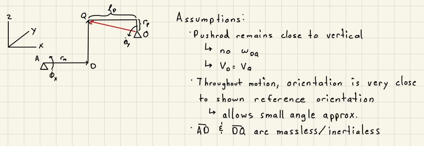
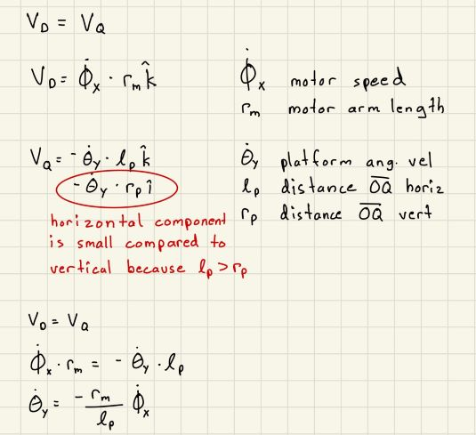
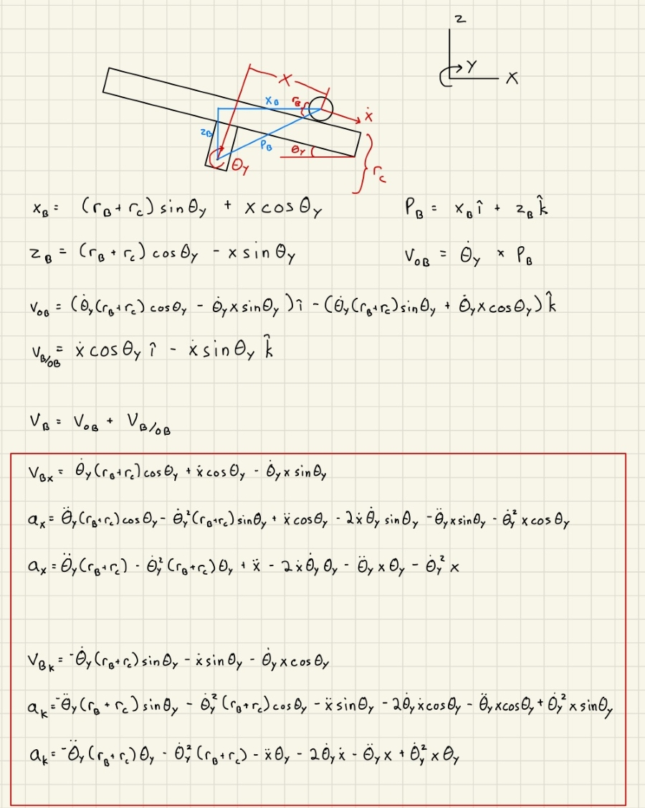
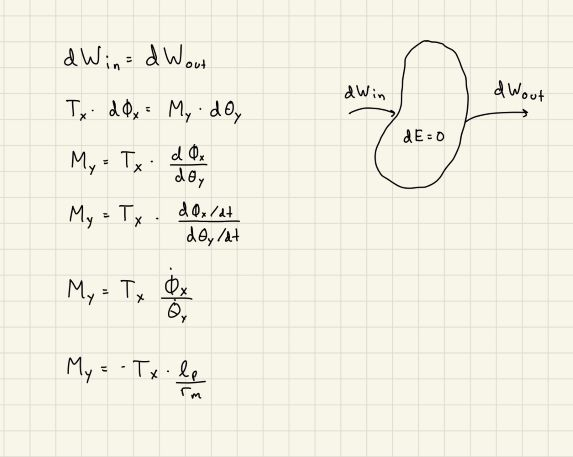
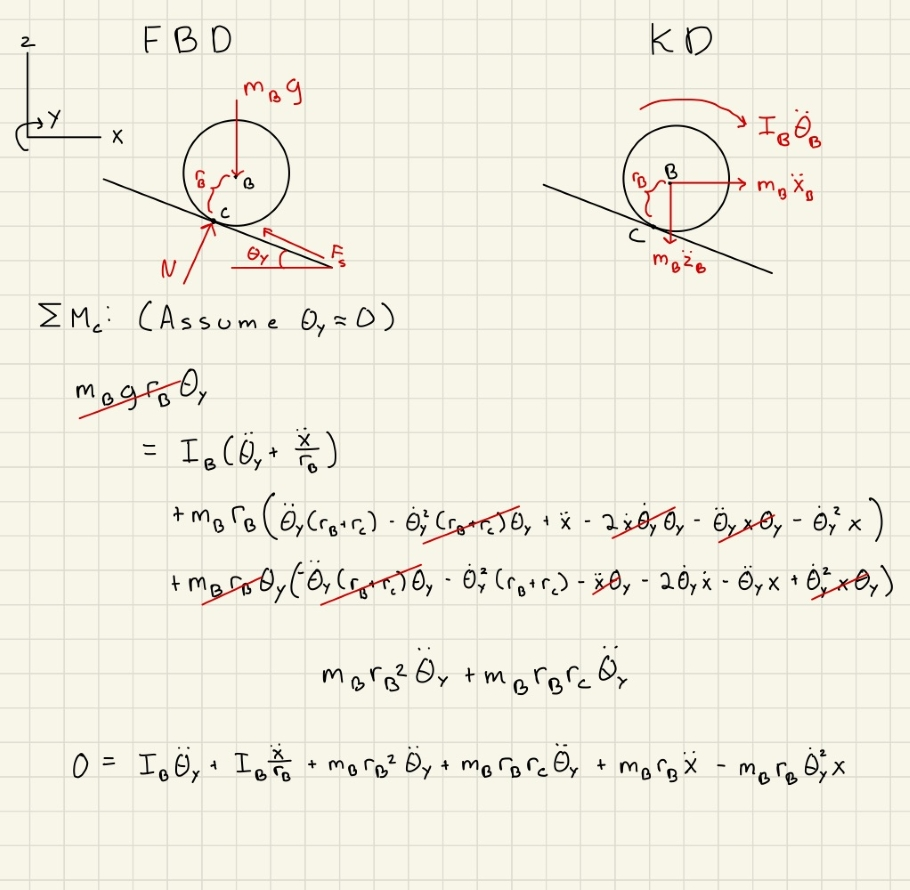
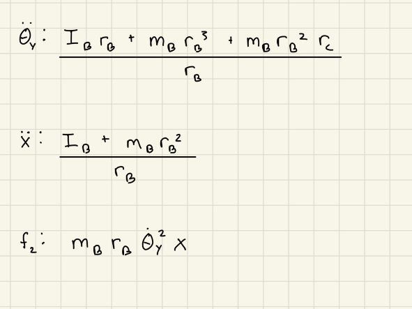
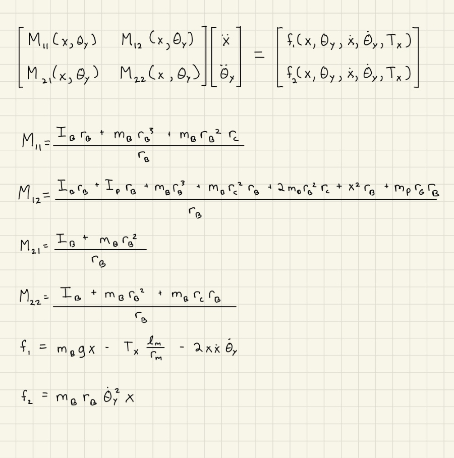

|
My Project
|


|
|
My Project
|
|
In order to perform a dynamics analysis of the system, we first had to "unfurl" the system by creating a 2D representation of the 3D system. The resulting schematic is shown below, along with the assumptions that were made for our analysis.

This schematic was then used to develop a kinematic relationship between the motion of the motor about point A and the motion of the platform about point O as shown below.

For this analysis, it was also essential that we be able to find and expression for the motion of the ball. This was done by assuming that the ball rolled without slip, and considering the motion caused by the ball and platform moving together, as well as the motion of the ball relative to the platform. The following calculations show the derived expressions for the velocity and acceleration of the ball.

A relationship between the motor torque for the first motor and the corresponding effective moment applied to the platform was also derived for later use in the analysis. This was done by using the method of virtual work in which we assumed that the system couldn't store any energy due to its lack of mass. The calculations for this analysis are shown below.

The next step in our analysis required the use of free body and kinetic diagrams in order to develop equations of motion for our system. In order to fully solve the system dynamics, we considered a system consisting of the ball and platform together, and a system consisting of just the ball. Small angle approximation was used to eliminate most of the terms
For this system, all jounts were replaced with reaction forces, and the force acting at point q was replaced with a force couple apllied at the pivot point O. This allowed us to display our effective moment on the free body diagram. We also assumed no friction at the pivot. The analysis for this system is shown below.

For this system,we took the sum of the moments about the contact point between the plate and the ball in order to elimate the friction force from our equations of motion. The analysis for this system is shown below.

Once we had our equations of motion, we seperated the terms based on whether they were a function of the angular acceleration of the platform, linear acceleration of the ball, or other lower order terms. this was done for both equations of motion resulting in six sepearte expressions as shown below.


The final of this analysis was taking the expressions from the previous step and setting them up in a matrix that will be used for future simulations. The format of the matrix is shown below.
